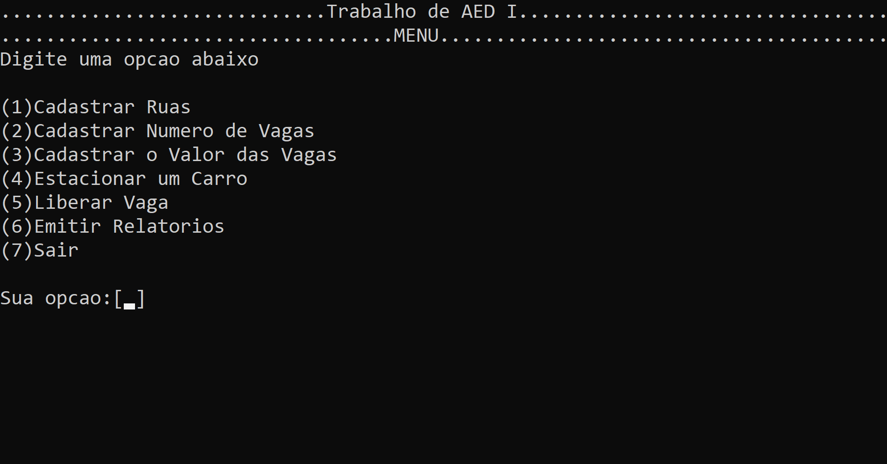
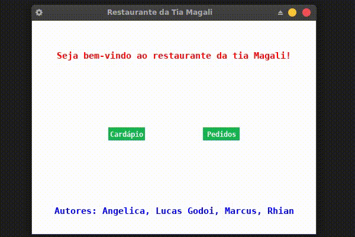
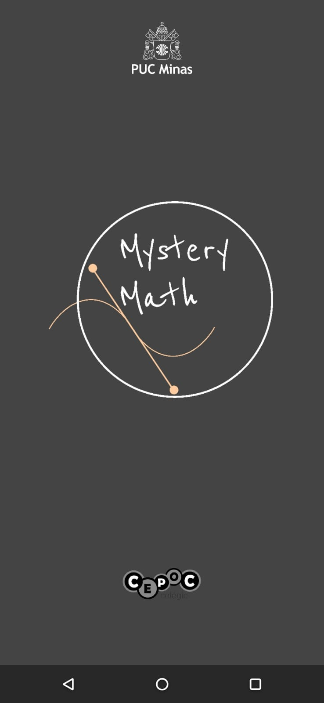
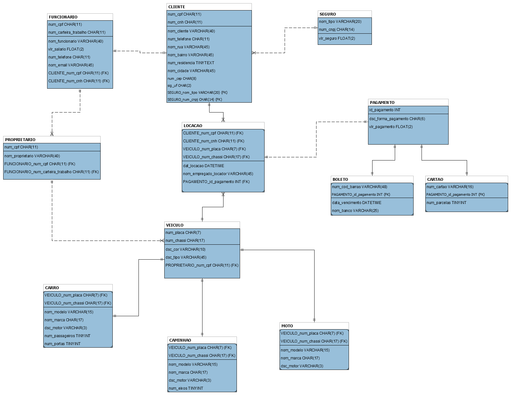
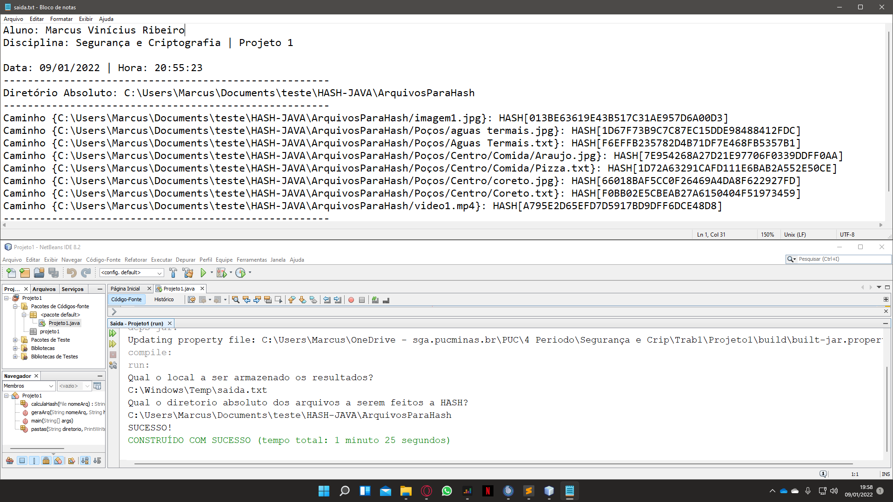

Portfólio
Projetos e trabalhos desenvolvidos
ao longo dos anos
Projetos da Universidade
Projeto Laboratório de Algoritmo e Estrutura de Dados I - Estacionamento em Linguagem C
Trabalho feito em equipe no primeiro período da faculdade, onde o usuário consegue estacionar um veículo em determinada vaga utilizando as opção pré-estabelecidas na interface do prompt de comando.
Clique na imagem para ir ao Github!
________________________________________________________________________________________________________
Projeto Laboratório de Algoritmo e Estrutura de Dados II - Restaurante da Tia Magali
Trabalho feito em equipe no segundo período da faculdade. O programa consiste em um sistema com interface gráfica, estruturas dinâmicas e ponteiros, onde o usuário consegue fazer os pedidos clicando nos botões predefinidos possibilitando servir algo ao cliente.
Clique na imagem para ir ao Github!
________________________________________________________________________________________________________
Mentoring II - Jogo Mystery Math
Este projeto foi desenvolvido em equipe durante o 2º período, para a avaliação final da disciplina de Mentoring II em parceria da PUC Minas de Poços de Caldas com o Colégio Cepoc. O objetivo deste projeto foi auxiliar um professor de matemática a dar aula aos alunos contando com uma temática e proposta diferente da usual para atrair atenção dos alunos.
Clique na imagem para ir ao Github!
________________________________________________________________________________________________________
Banco de Dados - Locadora de Veículos
Este projeto foi desenvolvido em equipe durante o 3º período, para a avaliação final da disciplina de Banco de Dados. O projeto consta na formação de um simples banco de dados de uma locadora de veículos qualquer. No programa apenas dá para simular os dados, mas não foi implementado em nenhum outro meio.
Clique na imagem para ir ao Github!
________________________________________________________________________________________________________
Segurança e Criptografia - HASH de Arquivos
Este projeto foi desenvolvido individualmente durante o 4º período, para a avaliação final da disciplina de Segurança e Criptografia. O projeto é um programa capaz de selecionar os arquivos de uma pasta especificada pelo usuário e tirar o hash de todos eles um por um e dar o resultado em um bloco de notas, contendo as informações de HASH, data, hora e caminho até o arquivo.
Clique na imagem para ir ao Github!
Projetos da Vida
Edição de Vídeo
Na minha época de "YouTuber" cheguei a fazer muitos vídeos para o meu canal e todos eles foram editados e desenvolvidos por mim. Abaixo segue um exemplo de vídeo que lancei de Highlight de Rainbow Six: Siege há alguns meses atrás.
Clique aqui para ir ao canal!
________________________________________________________________________________________________________
Edição/Criação de Imagem
Trabalhos desenvolvidos, principalmente de Freelancer, onde alguém me contatou para fazer logos, banner e design de story. Abaixo segue uma logo desenvolvida por mim, utilizando a ferramenta PhotoShop CS6 para a crianção da loja "PodsPah" e na direita, uma publicação de Natal para a Padaria Ki Sabor.
________________________________________________________________________________________________________
Cartão de Visitas Digital
Trabalho realizado para a Padaria Ki Sabor com o intuito de divulgar a loja em um único cartão interativo contendo todas as redes sociais, número, endereço e informações úteis aos clientes.